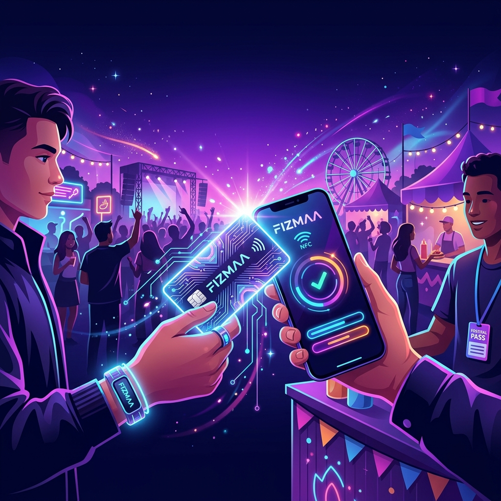
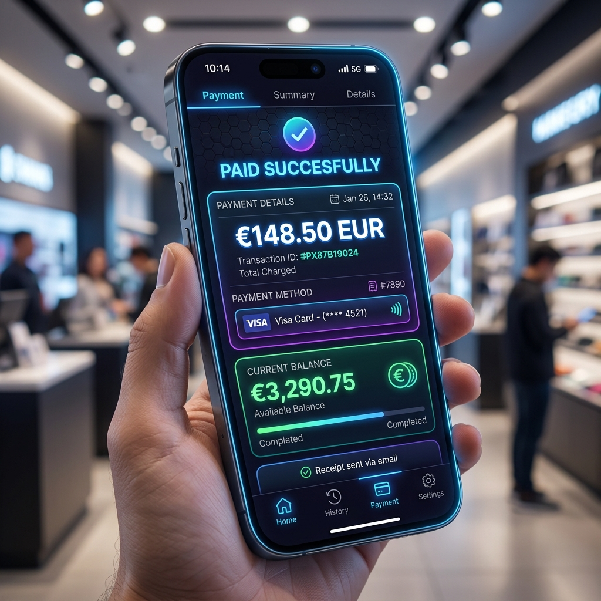

Native AES-128 on Silicon
Cryptographic authentication built into the chip. A terminal without the key is actively rejected by the card — not just given empty data.
The offline-first cashless payment ecosystem for live events.
3 apps. 1 NFC card. Zero internet dependency at the point of sale.

Navigate the complete master reference document.
A complete cashless payment platform built specifically for live events.
FizMaa Cashless solves a fundamental problem at large events: payments are slow, queues are long, cash handling is messy, and both vendors and organizers lose money to theft, miscounting, and fraud. Card payments via normal POS machines require stable internet and are too slow for a busy stall. QR code payments require the customer to open an app, scan a code, authenticate, and wait for confirmation — multiple steps during which the queue behind them grows.
FizMaa's answer is an NFC card that the attendee taps once to pay. Tap, beep, done. No internet required at the point of payment. The balance is stored encrypted on the physical card itself, so a payment goes through in under two seconds whether the stall has WiFi or not.
Everything you need to know in 60 seconds.
| Pillar | What It Means |
|---|---|
| 🔌 Offline-First | Every payment writes directly to the card. Server syncs when it can, not when it must. |
| 🛡️ Fraud-Resistant | Visual Handshake + Product Catalog + ML Detection + Hash-Chained Ledger = 6 layers deep. |
| 🔐 Role-Separated | 3 apps, 5+ JWT roles, strict API-level enforcement. No shortcuts. |
| 🤖 AI-Augmented | 5 AI features — all advisory. No AI ever moves money autonomously. |
| ⚡ Sub-2-Second Payments | NFC tap → AES decrypt → validate → deduct → write. Complete cycle under 2 seconds. |
The entire system is built around three separate applications for three separate user groups. These are not three features of one app — they are three completely distinct software products that happen to share one backend. Each one is designed for a different person with different needs, different technical skills, and different responsibilities.
One backend. Three purpose-built frontends. Zero overlap.
Attendee
attendee
Booth Staff
booth_staff
Organizer
admin · supervisor · accountant
Why attendees cannot write their own cards — the most important architectural decision.
Picture this: you have five thousand attendees arriving at your festival. You need to hand each of them a blank plastic NFC card and somehow connect their pre-purchased ticket and prepaid cash balance to that specific piece of plastic. The tempting idea is to let attendees do this themselves using their own phone. Here is why this idea fails — and fails badly.
To write encrypted data onto a DESFire EV2 card, the app needs the secret AES-128 master keys. If you put those keys inside a public app millions of people download, a determined attacker will decompile the app, extract the keys, and produce unlimited free-balance cards within hours. There is no way to hide a secret inside a public app.
Your attendees own ten thousand different phone models. ~20% of budget Androids have no NFC chip. iPhones cannot write to DESFire cards without Apple's special entitlement. Even phones with NFC have antennas in different locations. You would end up with hundreds of people who simply cannot load their card through no fault of their own.
Writing cryptographic data to a DESFire card takes ~0.5–1 second of continuous, stable proximity. An excited attendee who taps and pulls away too quickly interrupts the write mid-completion. Recovering a corrupted card on the street, in a queue, is not a fast process — it defeats the entire purpose of self-service.
Two approaches to secure card writing. Both keep master keys on your hardware.
Purchases ticket and pre-loads starting balance through the FizMaa Companion app, or at a cash top-up point at the venue.
At the entry gate, a staff member with a dedicated Android POS device scans the attendee's booking QR code.
The POS app verifies the booking against the server and retrieves the correct balance.
Staff taps a fresh blank NFC card to the POS device. The app writes the verified, encrypted balance using the master AES-128 key.
Card UID record created on server, attendee account linked. Staff hands card over.
After purchasing ticket and loading balance through the app, a QR code tied to their session is generated.
Unmanned tablet kiosks with industrial-grade NFC reader modules. Attendee scans phone's QR using kiosk camera.
Clearly marked graphic shows exactly where to place the card. Industrial reader is far more consistent than any consumer phone antenna.
Verifies QR session with server, retrieves balance, and writes securely. Master keys never leave your hardware.
Feels fully self-service to the attendee, but the actual cryptographic write is performed by your secured, controlled machine.
MIFARE DESFire EV2 · ~₹80–120 per card · The offline-first enabler.
A basic RFID card has exactly one piece of data: a static, unencrypted UID number. You can read it, but you cannot write to it, encrypt it, or store a balance on it. If FizMaa used basic RFID cards, the entire system would be forced to be always-online — when connectivity drops at a large outdoor festival, every stall stops accepting payments.
| Feature | Basic RFID (~₹20) | DESFire EV2 (~₹100) |
|---|---|---|
| Writable Memory | ❌ Static UID only | ✅ Multiple sectors |
| Encryption | ❌ None | ✅ Native AES-128 |
| Offline Balance | ❌ Requires internet | ✅ Stored on card |
| Torn-Write Safety | ❌ Corruption risk | ✅ Auto-rollback |
| Multi-Sector | ❌ Single purpose | ✅ Cash + Tokens |
Cryptographic authentication built into the chip. A terminal without the key is actively rejected by the card — not just given empty data.
Data writes to a backup buffer first, then commits. If power is lost mid-write, the chip automatically rolls back to the last good state.
Multiple independent applications on a single chip. FizMaa stores cash balance and token balance in completely separate sectors — they can never interfere.
Only one device can communicate with a card at any instant. Double-spend via two simultaneous readers is physically impossible.
Two independent memory sectors. Cash balance and token balance never interfere.
| Field | Type | Purpose |
|---|---|---|
| encrypted_balance | AES-128 int | Current rupee balance, encrypted. Only terminals with the master key can read or modify this. |
| last_txn_nonce | 8-byte random | Fresh random value after every payment. Key to double-tap protection — POS checks this before processing. |
| last_txn_timestamp | Unix 32-bit | Exact time of last successful transaction. Paired with nonce for 5-second double-tap window. |
| txn_counter | 16-bit uint | Increments by 1 with every transaction. Server uses this to reconstruct chronological order from out-of-sequence syncs. |
| status_flag | 1-byte enum | active or blocked. A blocked card is rejected by every terminal,
including offline ones. |
| Field | Type | Purpose |
|---|---|---|
| token_meal_count | 1-byte uint | Remaining meal voucher tokens. Each food stall tap in Token Redemption mode decrements by 1. |
| token_beverage_count | 1-byte uint | Remaining beverage voucher tokens. Decrements when redeemed at a beverage stall. |
The attendee's event wallet. Simple. Fast. Non-technical.
Platform: React Native (Expo + EAS Build) · iOS + Android
JWT Role: attendee
Primary user: The person attending the event — not a tech-savvy user, potentially unfamiliar with NFC, in a noisy and busy environment.
Design philosophy: Everything should require one tap or one step. No typing card numbers. No QR scanning. No jargon.
Identity in FizMaa is anchored to the physical NFC card, not a traditional username/password.
Phone number OTP verification via SMS or Google Sign-In. Creates a bare account record with no card linked.
Money exists in their account record on the server, but has not yet been written to any physical card.
Staff POS scans booking QR, writes balance + account UID link to a blank card using master key authority.
Push notification: "Your card has been loaded and linked. Your balance is ₹500."
Online payment + physical card write at a controlled terminal. Never on the attendee's phone.
The payment (money moving from attendee's bank to organizer's account) happens entirely online through Razorpay. But the physical act of writing the new balance to the NFC card must happen at a controlled terminal, not on the attendee's personal phone.
Chooses amount — preset options (₹500, ₹1000, ₹2000) or custom amount.
Pays via UPI (any UPI app), debit card, credit card, or net banking through Razorpay payment sheet.
Razorpay webhook → backend records: "Account X has ₹500 waiting to be written to card."
Any top-up terminal at the event. Terminal reads card UID, queries server for pending top-up, writes new total balance.
Success chime plays. Push notification: "₹500 added. Your new balance is ₹1,500." App updates within 5 seconds.
Live balance, full transaction log, and dispute resolution — all from the attendee's phone.
Large, prominent typeface on the home screen — readable from arm's length in bright sunlight.
Complete, chronological list of every transaction. Each entry shows:
Offline caching: SQLite cache via expo-sqlite. Full history available without internet.
Only Supervisors (Admin Panel) can approve refunds. Attendees raise requests.
Tap the disputed transaction in History.
Wrong amount / Item not received / Double charge / Other. Optional text note.
Approved → card credit or post-event payout. Rejected → notification with reason.
Visual spending breakdowns and non-cash token display.
Simple visual breakdown of spending by stall type — Food, Beverages, and Merchandise.
This is not a full analytics dashboard. It is a receipt made visual. The goal is for an attendee to glance at a pie chart and understand where their money went.
Data source: Server-side transaction history, categorized by stall category tag assigned during Admin Panel setup. With Fixed-Product Catalog Mode, even more granular per-product breakdowns are available (e.g. "3× Biryani, 2× Lassi, 1× T-Shirt").
Non-cash tokens for volunteers, artists, and VIPs. Tokens are category-restricted: a meal token can only be redeemed at a food stall. A beverage token can only be redeemed at a beverage stall.
How tokens get on the card: Issued by Admin via Token Allocation Manager (Admin Panel), then physically written to Sector 2 of the card at the next terminal tap or at the gate.
A standalone webpage for attendees to claim unused balance as a bank transfer, from home, up to 14 days after the event.
Why this exists: When a large festival ends, hundreds of attendees may have unused balance. Without a self-service option, all of them physically queue at a cash-out booth during the chaotic last hour. A web-based portal shifts this load to a calm, post-event window.
Why it's a separate webpage: Works even if the attendee has uninstalled the app, changed phones, or prefers not to open an app. A simple URL in a post-event email is more universally accessible.
Organizer triggers "Close Event" in Admin Panel. Ledger locked — no more syncs accepted, all offline queues flushed, final balance confirmed.
"The event is over. You have ₹230 remaining on your card. Click here to request a bank transfer."
Short 8–12 character alphanumeric code printed on the physical card. Proof of card possession — no account login required.
Account Number, IFSC Code, Account Holder Name submitted securely.
Logged with unique Reference ID (e.g. RFD-2024-0891). Enters Celery payout queue — processed within 24–48 hours on business days.
"Your refund of ₹230 has been submitted. Reference ID: RFD-2024-0891. Please allow 3–5 business days."
Chat with your spending data using natural language. Phase 3 — a "nice to have" after core features are stable.
Why this is better than just a list: Browsing a transaction list to answer "how much did I spend on food?" requires scrolling, mentally filtering, and adding up numbers. A conversational interface answers that in one question.
Chat input on the Spending Insights screen. Question sent to a dedicated backend endpoint.
LLM (Claude via Anthropic API) converts natural-language question into a PostgreSQL query, constrained to SELECT only from tables related to this card UID.
Query runs against a read replica — never the primary database. Cannot UPDATE, DELETE, INSERT, or access any other user's data.
Result sent back to LLM for a short, friendly summary. Often includes a mini inline visualization (bar chart showing food vs beverage spend).
The Companion app uses NFC in read-only mode — fully compatible with iOS from Phase 1.
| Capability | Companion App Needs | iOS Support | Status |
|---|---|---|---|
| Read Card UID | One-time card linking | Core NFC (iOS 13+) | ✅ Native |
| Write to Card | Not needed by Companion | N/A | ✅ Not Required |
| Online Payments | Razorpay SDK | Full support | ✅ Native |
| Push Notifications | Top-up & refund alerts | Expo Notifications | ✅ Native |
| Offline Cache | Transaction history | expo-sqlite | ✅ Native |
The booth staff app. Fast, obvious, and recoverable from mistakes in seconds.
Platform: React Native (Expo + EAS Build) · Android only (Phase 1–3) · iOS in Phase 4 (subject to Apple entitlement)
JWT Role: booth_staff (scoped to a specific stall assignment)
Primary user: The vendor or staff member running a food, beverage, or merchandise stall. Dealing with a queue of customers, loud music, and time pressure.
Design philosophy: A staff member should be able to process a payment in under 10 seconds without looking at text — color and sound carry the meaning.
The most important flow in the entire ecosystem. Every other feature builds on this.
Large keypad or product catalog grid
Balance / Deduction / New Balance shown
Read → Decrypt → Validate → Deduct → Write
Green ✅ / Red ❌ + sound
SQLite offline queue → auto-sync
ISO 14443 session begins. App sends AES-128 master key authentication command. Card verifies key on its onboard crypto processor. Wrong key = communication rejected.
Read raw bytes from encrypted_balance, decrypt with master key. Check: balance sufficient?
Card blocked? Nonce matches previous within 5 seconds (double-tap)?
Calculate new balance. Encrypt with master key. Generate new random nonce. Record timestamp. Increment txn_counter. Write all to Sector 1 via DESFire authenticated write.
The most important UX decision in the entire system. The primary defense against vendor fraud.
In most cashless systems, a dishonest vendor can deliberately go offline (Airplane Mode), type ₹1,500 instead of ₹150, and process the payment silently. When synced later, it looks like a regular ₹1,500 transaction. The server has no way to know the vendor lied about the amount.
Velocity anomaly detection can catch fraud patterns after the fact. But "after the fact" means the customer's money is already gone. Prevention must happen at the moment of the transaction.
By showing the exact deduction and new balance in the largest possible type on a full screen, and requiring the customer to physically tap their card to proceed, the screen forces the customer to be an active participant in verifying the transaction.
The "proceed to NFC" code path is only triggered by the NFC scan event — not by any button press. Vendor has no button to skip this screen.
Customer taps card (proceeds) or vendor presses Back (cancels entirely). No middle ground.

How transactions survive without internet and how the server handles out-of-order syncs.
Every transaction is written to a local SQLite database immediately after the card write succeeds. This database is:
expo-background-fetch when connectivity returns2:00 PM — Attendee tops up ₹1,000 at entrance terminal. WiFi drops — server still thinks card has ₹0.
2:30 PM — Attendee buys ₹200 biryani at food stall. Food stall is online, syncs immediately: "Card 04:A3 paid ₹200, balance now ₹800."
Server sees txn_counter = 2 but has no record of counter #1. Instead of rejecting, marks as "Pending Reconciliation"
2:50 PM — Entrance terminal WiFi returns, pushes the top-up (counter #1). Celery reconciliation job stitches the full timeline in correct order. Account is clean.
Closes a meaningful fraud gap and unlocks per-product analytics. Inspired by StuStaPay's ordr/line_item model.
The problem this solves: The Visual Handshake prevents showing the wrong amount to a customer. But it doesn't prevent typing the wrong amount in the first place. If a vendor at a ₹150 biryani stall types ₹200, the customer sees ₹200, doesn't realize biryani should cost ₹150, and taps. Beyond fraud, free-text amount entry means FizMaa has no idea what was sold — only what amount was charged.
| Aspect | ❌ Before (Keypad Only) | ✅ After (Catalog Mode) |
|---|---|---|
| Amount Entry | Staff types amount manually | Tap "Biryani" — ₹150 auto-calculated |
| Fraud Surface | Room for manual manipulation | Zero room for amount fraud |
| Analytics | Only total amounts tracked | Per-product sales analytics unlocked |
| Handshake Screen | Shows total only | Shows itemized breakdown |
| Inventory Tracking | Impossible without manual count | Real-time per-product counts |
Four new features that extend the POS app's capabilities.
What it does: Persistent "TEST MODE" banner on every screen. All transactions tagged
is_test = true — excluded from real settlement calculations.
Why it exists: Staff hired day-of the event can practice the full payment flow — entering amounts, seeing the Handshake Screen, tapping cards — without polluting the live ledger. When practice is complete, the supervisor toggles the device to Live Mode with a PIN.
Implementation: Server-side filter on all settlement endpoints:
WHERE is_test = false. Test transactions are visible in the Admin Panel for diagnostics but
clearly marked and never included in financial reports.
What it does: Redeems meal/beverage tokens from the card's second DESFire sector. Completely independent from cash balance.
How it works: Staff toggles to "Token Mode." When a card taps, the app reads Sector 2 instead of Sector 1. The Handshake Screen shows token count instead of rupee balance: "Meal Tokens: 3 → 2"
Sector independence: Sector 1 = cash. Sector 2 = tokens. Each has its own access keys. A food stall can redeem a meal token without touching the cash balance.
What it does: Speak the amount instead of typing. On-device Speech-to-Text using a quantized Whisper-tiny model. Works fully offline.
Staff says "One fifty" → app shows "Did you say ₹150?" → Yes / Try Again.
What it does: Dedicated cash-out terminals near the exit gates. Attendees tap card → staff reads balance → hands over equivalent cash → card cleared to ₹0.
Distinct role: cashout_terminal — separate JWT role
from regular booth staff, with its own permission set.
Transaction type: TOPUP_REFUND — fully auditable.
The Admin Panel settlement report clearly separates cash-out transactions from regular payments.
The organizer's command center. Three distinct views. One unified dashboard.
Platform: Next.js (App Router) · Web dashboard
JWT Roles: admin (organizer), supervisor (on-ground operations),
accountant (finance/reports)
The Admin Panel is the only place where the entire event's financial reality is visible in real-time. It is where decisions are made, fraud is caught, settlements are generated, and post-event payouts are authorized.
| Capability | 👑 Admin / Organizer | 🔍 Supervisor | 📊 Accountant |
|---|---|---|---|
| Live Event Dashboard (Socket.IO) | ✅ Full Access | — | — |
| Stall Management & Configuration | ✅ Full Access | — | — |
| ML Anomaly Alerts & Velocity Flags | ✅ Full Access | 🔍 Investigate | — |
| Card Management (Block UIDs) | ✅ Full Access | — | — |
| Refund Approval Queue | — | ✅ Approve/Reject | — |
| Lost Card Replacement (< 2 min) | — | ✅ Execute | — |
| Dispute Log & Resolution | — | ✅ Full Access | — |
| Real-Time Stall Audit | — | ✅ On-Site Audit | — |
| Settlement Reports (PDF/Excel) | ✅ Generate | — | 📥 Read-Only |
| Revenue Breakdowns & Exports | — | — | 📥 Full Access |
Real-time event visibility powered by Socket.IO. Configure every stall before the gates open.
The dashboard is the organizer's real-time view of the entire event. Powered by Socket.IO, it updates every transaction as it syncs from POS devices across the venue.
Running total across all stalls. Updates in real-time as transactions sync.
Revenue ranked by stall with hourly trend sparklines. Instantly spot underperformers.
How many POS devices are currently online vs offline. Alerts if devices go dark.
ML anomaly alerts appear in real-time with severity badges and recommended actions.
Before the event, the Admin configures every stall in the system. This determines what each POS device can do and what data it sends.
Name, location code, and category tag (Food / Beverages / Merch) that drives analytics and token redemption rules.
Build the menu, set prices, assign to stalls. Staff devices receive the catalog on login.
Assign booth_staff users to specific stalls. JWT tokens are stall-scoped — Stall #7 staff cannot call Stall #12 endpoints.
Keypad mode, Catalog mode, or Token Redemption mode for each stall. Configurable per-stall.
Refund approvals, lost card replacement, disputes, and on-site stall audits.
All refund requests from attendees and booth staff arrive here. The supervisor reviews each request, checks the stall's transaction log for that time period, and approves or rejects with a written reason.
Approved refunds are either written back to the card at the next terminal tap (during event) or processed via post-event bank transfer payout (after event closes).
When an attendee reports a lost card, the supervisor can execute a full replacement in under 2 minutes:
Centralized log of all disputes — from attendees, booth staff, and system-generated anomalies. Each dispute has a timeline, evidence trail, and resolution status.
The supervisor can view the transaction timeline for any card UID, cross-reference with stall logs, and add investigation notes before resolving.
The supervisor can walk up to any stall and view its live transaction feed, revenue total, and device status from their tablet or phone browser.
Useful for spot-checking vendors during the event. If a stall's revenue seems unusually low or high, the supervisor can investigate immediately rather than waiting for post-event settlement.
Token allocation, text-to-SQL queries, and ledger integrity verification.
Issue meal/beverage tokens to specific cards. Admin scans a card UID (or enters it manually), selects recipient type (Volunteer / Artist / VIP), and sets token quantities.
Management table shows issuance statistics: total tokens issued, redeemed, and remaining per category. Useful for planning food supplies.
Tokens are physically written to Sector 2 of the card at the next terminal interaction or at the gate when the card is first loaded.
Type questions in plain English. "Which stalls underperformed today?" → LLM translates to sandboxed read-only SQL → answer displayed with inline chart.
The query is generated under strict constraints: may only SELECT from event-related tables. Cannot UPDATE, DELETE, or INSERT. Runs on a read replica, never the primary database.
Examples: "What was the busiest hour?" · "Which card spent the most?" · "Revenue breakdown by category?"
SHA-256 hash chain on every transaction. Each transaction record includes a hash of its own data combined with the hash of the previous transaction.
The dashboard shows a green shield: "4,812 txns · chain intact." If any historical record is tampered with, it breaks every subsequent hash — instantly detectable.
Addresses a previously uncovered attack vector: someone with database access modifying transaction records after they've synced.
One backend. Three apps. Role separation enforced at the API layer.
Async Python · handles concurrent sync bursts from hundreds of POS devices
ACID-compliant · transactions, audit trail, hash chain integrity
Caching · pub/sub · async background jobs (reconciliation, payouts, ML scoring)
Live push to Admin Panel dashboard — real-time transaction feed
| Table / Field | Status | Powers |
|---|---|---|
| products | New Table | Fixed-Product Catalog Mode |
| transactions.line_items | New Field | Itemized purchase records |
| transactions.is_test | New Field | Test Mode exclusion from settlement |
| transactions.type | Extended | + token_redemption, cashout types |
| tokens | New Table | Token allocation & tracking |
| transactions.previous_hash | New Field | SHA-256 hash chain for ledger integrity |
| refund_requests | New Table | Post-event self-service refund portal |
/transactions/sync · /cards/balance
/reports · /events/dashboard
Both share PostgreSQL + Redis. Zero data model changes — purely deployment topology.
Every attack vector mapped. Every gap closed.
| # | Threat | Attack Vector | Defense |
|---|---|---|---|
| 01 | Lost Card | Finder spends the balance | App freeze (seconds) + Supervisor replacement (2 min, offline-safe) |
| 02 | Torn Write | Phone dies mid-NFC write | DESFire EV2 backup sector auto-rollback — physically impossible to corrupt permanently |
| 03 | Out-of-Order Sync | Top-up not yet on server | Transaction counter on card · server waits for missing counters · Celery reconciles |
| 04 | Vendor Overcharges | Staff types wrong amount | Visual Handshake + Fixed-Product Catalog + ML Anomaly Detection |
| 05 | Double-Tap | Card read twice = double deduction | 3-layer: app NFC lock (3s) + card nonce (5s) + server idempotency key |
| 06 | Ledger Tampering NEW | Historical records altered post-sync | SHA-256 hash chain — any alteration breaks every subsequent hash |
Three independent layers ensure a card is never charged twice for a single purchase.
Where: POS app memory (Zustand state)
How: After a successful card write,
isNfcLocked = true is set in Zustand. The NFC reader is completely disabled for 3 seconds. Even
if the customer accidentally double-taps, the reader physically ignores the second tap.
Scope: Protects against rapid successive taps on the same device only. Does not protect against two different devices reading the same card simultaneously (which is handled by the ISO 14443 single-reader protocol).
Where: On the NFC card itself (Sector 1)
How: Every successful write generates a new random 8-byte nonce
and records the timestamp. Before processing any payment, the POS checks: is the last_txn_nonce
the same as the previous transaction AND is the last_txn_timestamp within 5 seconds? If both
true → silent reject (show success animation to avoid confusing the customer, but write nothing).
Scope: Works across any device that reads the card. Even if a different terminal reads the card within 5 seconds, the nonce check catches it.
Where: Backend (PostgreSQL)
How: Every transaction carries a device-generated UUID called the
idempotency_key. When the sync arrives at the server, the server checks: has this key already
been recorded? If yes → silently discard the duplicate. No transaction is ever processed twice, regardless
of network retries.
Scope: Protects against network-level duplicates. If a sync request is sent but the acknowledgment is lost, the device retries — the server catches the duplicate.
iOS Core NFC does not expose the APDU commands needed to write to DESFire EV2.
| App | NFC Need | iOS Status |
|---|---|---|
| Companion | Read-only | ✅ Phase 1 Viable |
| POS | Read + Write | ⛔ Blocked |
Send to nfc-entitlement@apple.com with use case + company details.
Apple evaluates manually — not an automated process.
Approval window. Not guaranteed.
Standard review still applies if approved.
If Apple denies the entitlement request:
ACR1255U-J1 · iPhone → Bluetooth → Reader → DESFire
5 features. Clear priorities. One unbreakable rule.
| Feature | App | Mechanism | Runtime | Priority |
|---|---|---|---|---|
| ML Anomaly Detection | Admin | Isolation Forest · rolling model per stall | Backend (Celery) | 🔴 High |
| Generative Fraud Explanations | Admin | LLM API (Claude) · evidence summary | Cloud API | 🔴 High |
| Text-to-SQL Query Bar | Admin | LLM → sandboxed read-only SQL | Cloud API | 🟡 Medium |
| Conversational Spending | Companion | LLM → user-scoped SQL | Cloud API | 🟢 Low |
| Voice Amount Entry | POS | Quantized Whisper-tiny on-device STT | On-Device Only | 🟢 Low |
Per-stall trained models that learn normal patterns and flag deviations in real-time.
| Aspect | Old (Static Rule) | New (ML Model) |
|---|---|---|
| Threshold | Fixed 3× for all stalls | Per-stall trained model |
| Detection | Misses identical-amount clusters | Catches velocity & timing anomalies |
| False Positives | Flags expensive items | Learns each stall's normal range |
| Output | Binary alert (fraud / not fraud) | Confidence score + distribution histogram |
Model: Isolation Forest — a lightweight unsupervised anomaly detection algorithm that works well with small datasets and can be retrained on a rolling basis during an event.
Training: Each stall gets its own model trained on its transaction history. A biryani stall's model knows that ₹150–₹300 transactions at 2-minute intervals is normal. A bar stall's model knows that ₹200–₹500 at faster intervals is normal. Same behavior, different thresholds.
"Over the last 4 minutes, Stall #14 recorded 12 identical transactions of exactly ₹500 across 3 distinct card UIDs. This pattern suggests possible balance manipulation or duplicate card cloning."
Natural-language queries for the Admin Panel and hands-free amount entry for the POS.
Instead of building custom reports for every possible question an organizer might ask, the Text-to-SQL bar lets them type questions in plain English and get instant answers backed by real data.
In a loud, busy stall environment, typing on a phone screen can be slow and error-prone. Voice entry lets staff speak the amount with their hands free — useful when they're simultaneously handling food or merchandise.
On the amount entry screen, a microphone icon activates on-device speech recognition.
"One fifty" or "Two hundred" — processed entirely on-device using quantized Whisper-tiny model.
"Did you say ₹150?" with Yes / Try Again buttons. Prevents misheard amounts.
Confirmed amount fills the keypad display. Proceeds to Visual Handshake Screen as normal.
Every table, every field, and how they connect.
| Table | Key Fields | Purpose |
|---|---|---|
| users | id, phone, email, role, card_uid | All user accounts across all roles |
| cards | uid, user_id, status, server_balance | Card registry and server-side balance mirror |
| transactions | id, card_uid, amount, type, stall_id, txn_counter, idempotency_key, previous_hash, is_test, line_items | Complete transaction ledger |
| stalls | id, name, category, event_id, mode | Stall configuration and assignment |
| events | id, name, status, ledger_locked | Event lifecycle management |
| Table | Key Fields | Purpose |
|---|---|---|
| products NEW | id, stall_id, name, price, active | Fixed-product catalog for stalls |
| tokens NEW | card_uid, meal_count, beverage_count, issued_by | Token allocation and tracking |
| refund_requests NEW | id, card_uid, amount, bank_details, status, ref_id | Post-event self-service refund claims |
| anomaly_alerts NEW | id, stall_id, confidence, explanation, resolved | ML-generated fraud alerts |
All endpoints require JWT authentication. Role enforcement at the middleware level.
| Method | Route | Description |
|---|---|---|
| POST | /auth/otp | Send OTP for login |
| POST | /auth/verify | Verify OTP + issue JWT |
| POST | /cards/link | Link card UID to account |
| GET | /cards/balance | Get server-side balance |
| POST | /topup/initiate | Create Razorpay order |
| POST | /topup/confirm | Razorpay webhook handler |
| GET | /transactions | Get transaction history |
| POST | /refunds/request | Submit refund request |
| POST | /ai/spending-query | Conversational spending AI |
| Method | Route | Description |
|---|---|---|
| POST | /transactions/sync | Batch sync offline queue |
| GET | /stalls/catalog | Get product catalog for stall |
| GET | /cards/pending-topup | Check for pending top-ups |
| POST | /cards/write-confirm | Confirm card write completed |
| Method | Route | Description |
|---|---|---|
| GET | /events/dashboard | Live event stats (Socket.IO) |
| POST | /stalls/create | Create/configure stall |
| POST | /cards/block | Block a card UID |
| GET | /refunds/queue | Get pending refund requests |
| POST | /refunds/resolve | Approve/reject refund |
| GET | /reports/settlement | Generate settlement report |
| POST | /tokens/allocate | Issue tokens to card UID |
| POST | /ai/query | Text-to-SQL query bar |
| GET | /ledger/integrity | Hash chain verification |
| Method | Route | Description |
|---|---|---|
| POST | /refund-portal/auth | Authenticate via card PIN |
| GET | /refund-portal/balance | Get final settled balance |
| POST | /refund-portal/claim | Submit bank transfer claim |
Phased delivery from MVP to full AI-augmented platform.
How money flows from attendee to vendor, with full auditability at every step.
Every payment deducts from the card and records in the offline queue. The vendor doesn't receive actual money yet — they receive a promise backed by the system.
Supervisors ensure every POS device has synced its offline queue. Admin triggers "Close Event" — ledger is locked.
Admin generates per-stall settlement reports showing total revenue, commission deductions, and net payout amount. Available as PDF and Excel.
Celery payout queue processes bank transfers to each vendor based on settlement report. Confirmation emails sent with reference IDs.
Self-service refund portal open for attendees to claim unused balance. Same Celery payout infrastructure.
Five+ distinct roles. Strict API-level enforcement. Zero permission leakage.
| Role | App | Scope | Key Permissions |
|---|---|---|---|
attendee |
Companion | Own account only | View balance, top-up, view history, request refunds, AI spending queries |
booth_staff |
POS | Assigned stall only | Process payments, sync transactions, read product catalog. Cannot access other stalls. |
cashout_terminal NEW |
POS | Cash-out function only | Read card balance, process cash-out (TOPUP_REFUND type). Cannot process regular payments. |
admin |
Admin Panel | Event-wide | Full dashboard, stall config, card blocking, settlement generation, ML alerts |
supervisor |
Admin Panel | Operations | Refund approval, card replacement, dispute resolution, stall audits. Cannot generate settlements. |
accountant |
Admin Panel | Finance only | Read-only settlement reports, revenue exports. Cannot modify stalls, block cards, or approve refunds. |
booth_staff JWT token is scoped to a specific stall assignment. A token for Stall #7 cannot
call endpoints for Stall #12. This is enforced at the API middleware level — no client-side check can be
bypassed.
What happens before, during, and after an event from a technical operations perspective.
Every physical device needed to run a FizMaa Cashless event.
| Item | Specification | Quantity (Per Event) | Cost Estimate |
|---|---|---|---|
| NFC Cards | MIFARE DESFire EV2 · ISO 14443 | 1 per attendee + 10% buffer | ₹80–120 per card |
| POS Devices (Staff) | Android with NFC · selected high-quality models | 1 per stall + 1 per gate | ₹8,000–15,000 each |
| Cash-Out Terminals | Same as POS devices · cashout_terminal role | 1 per exit gate | ₹8,000–15,000 each |
| Top-Up Terminals | Same as POS devices · topup role | 1 per entry gate minimum | ₹8,000–15,000 each |
| Kiosk Tablets (Phase 3) | Android tablet + industrial NFC reader module | 2–4 at entry zone | ₹20,000–30,000 each |
| Bluetooth NFC Reader (Fallback) | ACR1255U-J1 · for iOS POS if entitlement denied | Optional | ₹3,000–5,000 each |
How FizMaa compares to common event payment solutions.
| Capability | Cash / QR Payments | FizMaa Cashless |
|---|---|---|
| Payment Speed | 15–30 seconds (cash) / 10–20s (QR) | Under 2 seconds (NFC tap) |
| Internet Required | Yes (QR) / No (cash) | No — fully offline at point of sale |
| Fraud Prevention | Manual counting / phone screenshot fraud | 6-layer defense (encryption, handshake, ML, hash chain) |
| Analytics | None (cash) / Basic (QR) | Per-stall, per-product, real-time with AI insights |
| Queue Speed | Slow — multiple steps per transaction | Fast — single tap, instant confirmation |
| Settlement | Manual cash counting, error-prone | Automated PDF/Excel reports, bank transfers |
| Token / Voucher Support | Paper coupons — easily lost, duplicated | Encrypted on-card tokens, category-restricted |
Five non-negotiable rules governing every decision in this system.
Every payment writes directly to the card. The server is informed asynchronously. Sync happens when it can, not when it must. If the entire internet infrastructure at a festival fails, every stall continues processing payments without interruption. The server catches up later.
The Visual Handshake Screen — now reinforced by Fixed-Product Catalog — is the primary defense against vendor fraud. A class of attack that server-side logic alone cannot prevent. The customer is the verifier. The UI makes verification effortless and unavoidable.
DESFire EV2's multi-sector capability makes both the offline-balance architecture and the Token system possible — without separate physical cards. The ₹60–80 premium over basic RFID pays for the entire product architecture.
Three apps. Five-plus JWT roles. Strict API-level enforcement. New roles like
cashout_terminal follow the exact same pattern as originals. The UI is a convenience layer —
security is enforced at the API middleware regardless of what front-end is in use.
Every AI feature is advisory. The human always makes the final decision. No AI autonomously moves money or takes irreversible action. ML detects patterns; humans decide actions. LLMs explain data; humans make decisions.
Key terms used throughout this document.
| Term | Definition |
|---|---|
| DESFire EV2 | A smart NFC card chip by NXP with writable memory, AES-128 encryption, and torn-write protection. |
| AES-128 | Advanced Encryption Standard with 128-bit keys. Military/bank grade encryption used on the card chip. |
| Visual Handshake | The full-screen confirmation display showing balance, deduction, and new balance before a payment is processed. |
| Torn Write | An interrupted write operation (e.g., card pulled away mid-write). DESFire EV2 auto-recovers from this. |
| JWT | JSON Web Token — a signed token used for authentication and role-based authorization across all apps. |
| Nonce | A random one-time value generated per transaction to prevent replay attacks (double-tap protection). |
| Idempotency Key | A unique UUID per transaction that prevents the server from processing the same sync request twice. |
| Term | Definition |
|---|---|
| Offline Queue | The local SQLite database on POS devices that stores transactions until internet connectivity allows sync. |
| Celery | A Python distributed task queue used for background jobs: reconciliation, payouts, ML scoring. |
| Socket.IO | A WebSocket library for real-time bidirectional communication. Powers the Admin Panel live dashboard. |
| Hash Chain | SHA-256 chain linking each transaction record to the previous one, making tampering instantly detectable. |
| Isolation Forest | An unsupervised ML algorithm for anomaly detection, trained per-stall to learn normal transaction patterns. |
| Text-to-SQL | Using an LLM to convert natural-language questions into sandboxed SQL queries for data retrieval. |
| Token | A non-cash voucher (meal/beverage) stored on Sector 2 of the NFC card, redeemable at category-matched stalls. |
Everything summarized for fast lookup.
3 apps · 1 NFC card · 6 security layers · 5 AI features · Zero internet dependency at the point of sale.